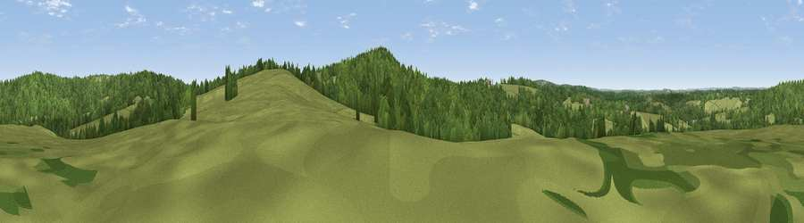

Viewpoint near Frant
#34315 in England · top 28% of its area beats it · near FrantWhere it is
The exact computed spot (TQ 57575 34075). Click the marker for map links.
The view, rendered

A 360° render of this exact spot computed from the terrain model, tree cover and land cover — summer colours, afternoon light, calibrated against photographs of famous viewpoints. Real trees, hedges and buildings will differ in detail.
The panorama
Grey silhouette: terrain skyline in each direction (720 bearings, Earth curvature and refraction included). Dashed green: skyline with trees (+15 m) and buildings (+8 m) as obstacles. Blue strip: how far the ground is visible on each bearing.
Where the view opens
Wedge length = distance to the farthest visible ground on that bearing (vegetation-aware). Rings at 10, 25 and 50 km.
What fills the view
50% grassland · 48% woodland ·
Angular shares of the visible panorama (visual magnitude), not map area. Landscape diversity 0.33 (0–1 Shannon).
Key numbers
More beautiful places nearby
The staircase of upgrades: each row has a higher view potential than everything closer. Driving times are estimates from straight-line distance, calibrated against real road routing — check an actual route before setting out.
| Place | Direction | Drive | Score |
|---|---|---|---|
| Viewpoint near Frant | ENE · 2 km | ~5 min | 42.0 |
| Viewpoint near Town Row | WSW · 2 km | ~5 min | 48.4 |
| Viewpoint near Argos Hill | S · 6 km | ~13 min | 53.0 |
| Viewpoint near Upper Hartfield | W · 11 km | ~21 min | 59.6 |
| Brightling Obelisk [Brightling Down] | SE · 16 km | ~28 min | 69.1 |
| Viewpoint near Glynde | SSW · 27 km | ~43 min | 70.8 |
| Malling Hill | SW · 27 km | ~43 min | 73.8 |
| Cliffe Hill | SSW · 27 km | ~44 min | 79.3 |
51.08436, 0.24839 · source: screening · position refined by local search. Computed location — check access rights before visiting.